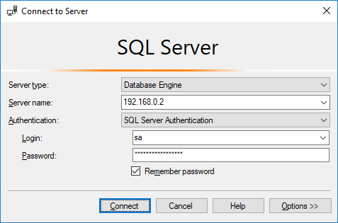

SQL Server on Debian
Not only have Microsoft made .NET available for Linux, they also ported SQL Server. This time, I want to install Microsoft SQL Server 2017 on Debian 9 (stretch).
Install SQL Server
Unfortunately, Microsoft has not made a SQL Server package for Debian. But they have made one for Ubuntu, and Ubuntu 16.04 (Xenial Xerus) is close enough to Debian 9 (stretch) to make this work.
Add the package feed by creating the following file:
/etc/apt/sources.list.d/mssql-server.list
deb [arch=amd64] https://packages.microsoft.com/ubuntu/16.04/mssql-server xenial mainWe also need the Microsoft package key to validate packages. This must be downloaded and converted before it can be installed in the correct place.
curl https://packages.microsoft.com/keys/microsoft.asc
gpg --dearmor microsoft.asc > microsoft.gpg
sudo mv microsoft.gpg /etc/apt/trusted.gpg.d/microsoft.gpgNow try and install SQL Server.
sudo apt-get update
sudo apt-get install mssql-serverSetup SQL Server
Once SQL Server has been successfully installed it needs to be setup.
sudo /opt/mssql/bin/mssql-conf setupThis will ask for which edition you want to run. I chose Express, which is adequate for most purposes.
When the setup is complete SQL Server should start automatically. Run the following command to check that this is the case:
sudo systemctl status mssql-serverConnect to SQL Server
I prefer to do my database administration from Windows with SQL Server Management Studio. But any SQL client will do. There is nothing special about connecting to SQL Server on Linux compared to any other database server.
Finally, run the following query to see that everything is working:
SELECT @@VERSIONIn my case this displays: Microsoft SQL Server 2017 (RC2) - 14.0.900.75 (X64) Jul 27 2017 08:53:49 Copyright (C) 2017 Microsoft Corporation Express Edition (64-bit) on Linux (Debian GNU/Linux 9 (stretch)).